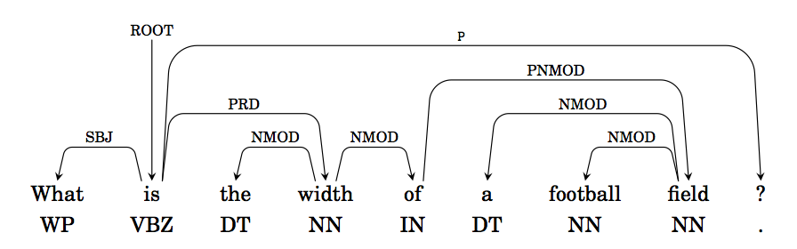

<?xml version = "1.0" encoding = "UTF-8"?>
<xsl:stylesheet version = "1.0" xmlns:xsl = "http://www.w3.org/1999/XSL/Transform">
<xsl:template match = "/"> 
<!doctype html>
<html lang="en">

	<head>
		<meta charset="utf-8">
    
		<title>Lecture 1 - NNML 2020</title>
		<meta name="description" content="NNML">
		<meta name="author" content="Emre Neftci">

		<meta name="apple-mobile-web-app-capable" content="yes">
		<meta name="apple-mobile-web-app-status-bar-style" content="black-translucent">

		<link rel="stylesheet" href="dist/reset.css">
		<link rel="stylesheet" href="dist/reveal.css">
		<link rel="stylesheet" href="nmilab.css">

		<!-- Theme used for syntax highlighted code -->
		<link rel="stylesheet" href="plugin/highlight/monokai.css">

    <script src="jquery.js"></script> 
    <script> 
    $(function(){
      $("#sdlides").load("slides_1_inner.html"); 
    });
    </script> 

  </head>    

	<body>
		<div class="reveal">
			<div class="slides">
<section>
        <section data-markdown data-vertical-align-top data-background-color=#B2BA67><textarea data-template>
            <h1> Lecture 9: Recurrent Neural Networks<br/> </h1>

        </textarea></section>

        <section data-markdown><textarea data-template>
        <h2> Time-Dependent Data </h2>                                                     
        <ul>
          <li/> Almost all real-world data has a time-like dimension: For example:
            <ul>
              <li />Videos
                
              <li />Audio
                
              <li />Text
                
            </ul>

          <li class=fragment /> So time is just another dimension, like channels in images. But what is special about it?
        </ul>
        </textarea></section>

        <section data-markdown><textarea data-template>
        <h2> How to Deal with Variable-Sized Dimensions?</h2>                                                     
        <ul>
          <li/> Time is a variable dimension. Until now, we dealt with data having static dimensions. There are two ways to deal with this:
          <ol>
          <li class=fragment /> Fix the size, truncate (pad) the data that has a larger (smaller) dimension. For example for size 2:
            <ul>
              <li/> Three data samples: [[1, 5, 6], [3,4], [3]] $\rightarrow$ [[1, 5], [3,4], [3, None]]
              <li /> Once the size is fixed, a feed-forward neural network can be used
            </ul>
            
          <li class=fragment /> Use a recursive algorithm: Feed in the data time step by time step and keep a memory of the previously fed data samples
            <ul>
              <li/> [[1, 5, 6], [3,4], [3]] $\rightarrow$ [[1,3,3],[5,4, -],[3,-, -]
              <li /> - is a special symbol means end-of-sequence. Recurrent neural networks are designed to deal with such data
            </ul>
          </ol>
        </ul>
        <div class=fragment ><p class=pl> Recurrent Neural Networks focus on approaches under 2.</div>
        </textarea></section>


        <section data-markdown><textarea data-template>
        <h2> Recurrent Neural Network in Deep Learning </h2>                                                     
        <ul>
          <li/> What is the consequence of having a "loop" in the neural network graph?
          <li class=fragment /> Errors must be propagated through the loop! In the variable size dimension is time, errors need to be propagated to the past.
        </ul>
          
          <p class=ref>https://colah.github.io/posts/2015-08-Understanding-LSTMs/</p>
        </textarea></section>

        <section data-markdown><textarea data-template>
        <h2> Recurrent Neural Networks in Deep Learning </h2>
        

        <ul>
          <li/> RNNs can be unfolded to form a deep neural network
            <li/> The depth along the unfolded dimension is equal to the number of time steps.
            <li/> An output can be produced at some or every time steps.
            <li/> Depending on the output structure, different problems can be solved
        </ul>
        </textarea></section>

        <section data-markdown><textarea data-template>
        <h2> Example Tasks</h2>                                                     
        
        <ul>
          <li /> Can you find examples for each case
        </ul>
        </textarea></section>


        <section data-markdown><textarea data-template>
        <h2> Simple Recurrent Neural Network </h2>                                                     
        <ul>
          <li/> Also called Elman RNN, these are the simplest RNNs.
            
            <p class=ref> Elman, Finding Structure in Time <p>
          $$ 
          \begin{split}
          h_t = \text{tanh}(W_{ih} x_t + W_{hh} h_{(t-1)} ) 
          \end{split}
          $$
          <li/> A simple recurrent network is simply a network whose output feeds back to itself
          <li/> They are useful to understand the challenges of training RNNs, but in practice variations such as LSTM or GRU are used
        </ul>
        </textarea></section>


        <section data-markdown><textarea data-template>
        <h2> Unrolled Neural Network </h2>                                                     
        <ul>
          <li /> We can use the same training framework as feed-forward networks by unrolling the variable-size dimension.
          
          <p class=ref>https://colah.github.io/posts/2015-08-Understanding-LSTMs/</p>
          <li /> We apply back-propagation to the unrolled network. This is called Back-Propagation-Through-Time.
          <li /> Conceptual difference wrt feedforward networks: Parameters are shared along the horizontal axis.
        </ul>
        </textarea></section>

        <section data-markdown><textarea data-template>
        <h2> Training a Simple Recurrent Neural Network </h2>                                                     
        <ul>
          <li/> For sequential tasks, Pytorch expects tensor to have the following dimensions: [time, batch, data]
          <li/> We will use the MNIST data, but feed the data in row by row.
            
          <li/> Building the Simple RNN by "unrolling the loop" (Pytorch Tutorial)

        [](https://colab.research.google.com/drive/1KArdyQh2v5XlO595OYK2agTcQk4rBznm?usp=sharing)

        </ul>
        </textarea></section>

</section>
      </div></div>

		<script src="dist/reveal.js"></script>
		<script src="plugin/zoom/zoom.js"></script>
		<script src="plugin/notes/notes.js"></script>
		<script src="plugin/math/math.js"></script>
		<script src="plugin/search/search.js"></script>
		<script src="plugin/markdown/markdown.js"></script>
		<script src="plugin/highlight/highlight.js"></script>
		<script>
			// More info about initialization & config:
			// - https://revealjs.com/initialization/
			// - https://revealjs.com/config/
			Reveal.initialize({
				hash: true,
        width: 1280,
        height: 720,
        margin: 0.0,
        navigationMode: 'grid',
        transition: 'fade',
				controls: true,
				progress: true,
				center: true,
				hash: true,
				plugins: [RevealMarkdown, RevealHighlight, RevealNotes, RevealMath.MathJax2],
        math: {
              mathjax: 'https://cdnjs.cloudflare.com/ajax/libs/mathjax/2.7.0/MathJax.js',
              config: 'TeX-AMS_HTML-full', 
              TeX: { Macros: { Dp: ["\\frac{\\partial #1}{\\partial #2}",2] }}
            },
			});
		</script>
	</body>
</html>
